Diagramas Grafset:
A continuación se presenta los diagramas Grafset desarrollados para las diferentes partes de la planta. En primer lugar se encuentra el diagrama general donde se realiza el control de procesos general de cada celda y en luego se realiza definen el proceso realizado en la producción normal (véase Guía Gemma para más información) de cada una de las celdas.
Se destaca que se hizo dos diagramas Grafset para cada uno: Nivel 1 que realiza una descripción funcional y Nivel 2 que realiza una descripción tecnológica.
Grafset nivel 1 - Planta
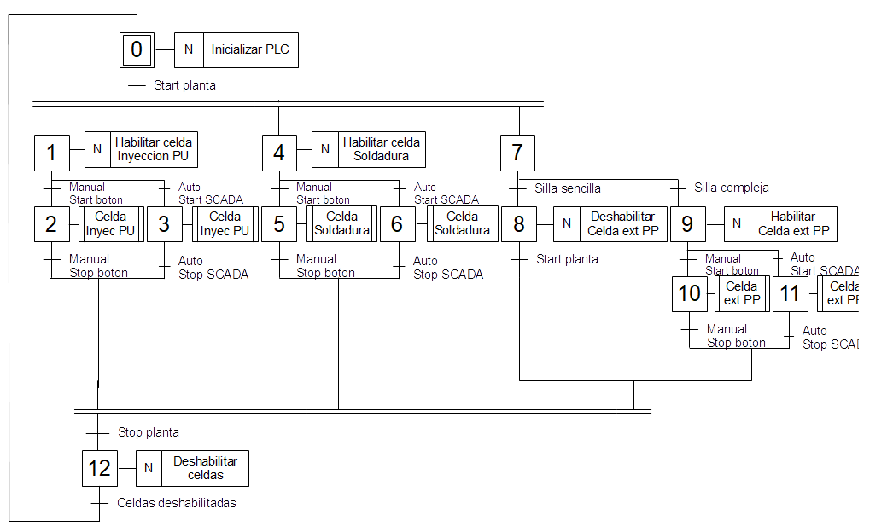
Grafset nivel 2 - Planta
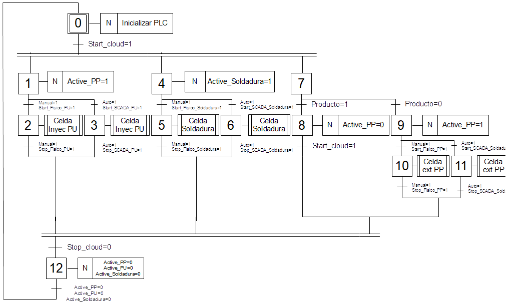
Grafset nivel 1 - Celda inyección PU
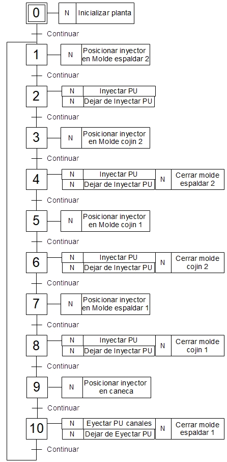
Grafset nivel 2 - Celda inyección PU
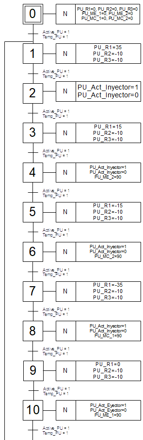
Grafset nivel 1 - Celda Extrucción PP
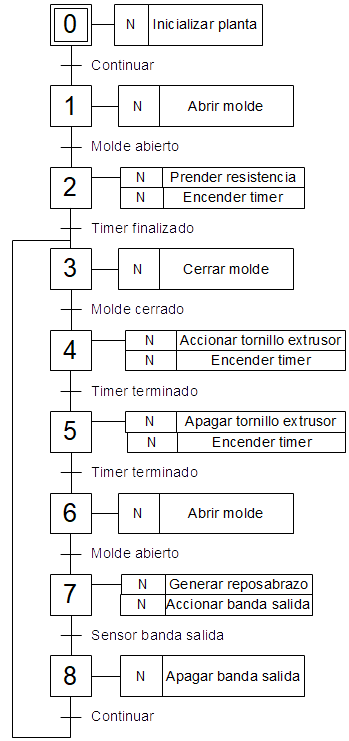
Grafset nivel 2 - Celda Extrucción PP
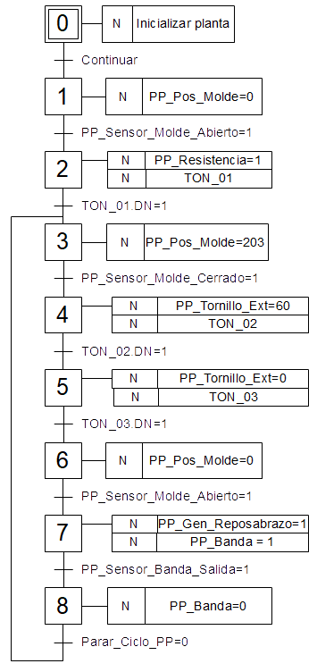
Grafset nivel 1 - Celda Soldadura
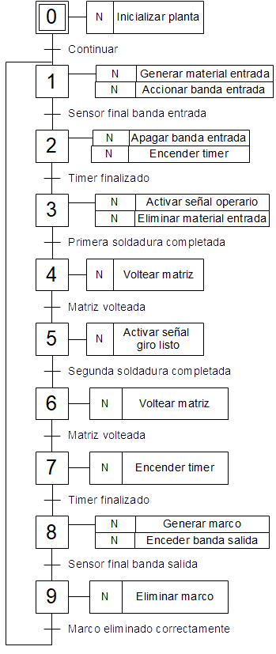
Grafset nivel 2 - Celda Soldadura
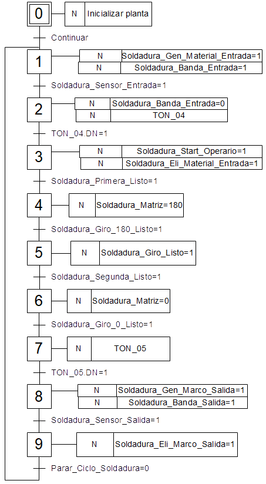
Implementación parcial Guía GEMMA
Para realizar una implementación segura en una planta física, en el proceso de elaboración del programa se tuvo en cuenta la guía GEMMA, para definir los diferentes estados de cada una de las celdas. Estos estados y las transiciones entre ellas se encuentran mostradas en la siguiente figura. Donde las señales de start, stop, emergency stop y mantenimiento, corresponde a los botones de los software SCADA de cada uno.
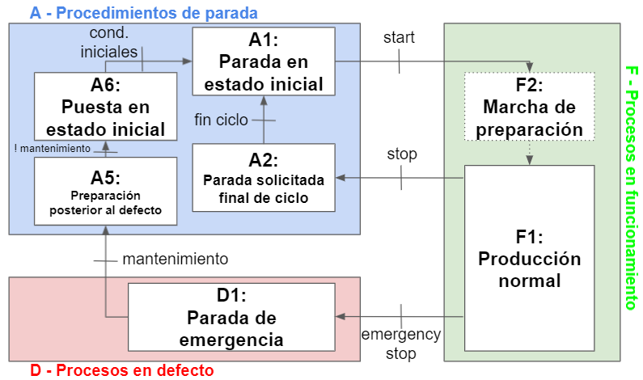Mapeo de señales:
A continuación se muestra el mapeo de señales realizado para la comunicación de los software NX y Studio 5000 donde se señalan el tipo de dispositivo (sensor/actuador) y una descripción breve de la señal.
Mapeo señales - Celda inyección PU
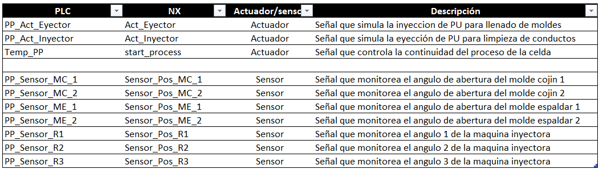
Mapeo señales - Celda Extrucción PP
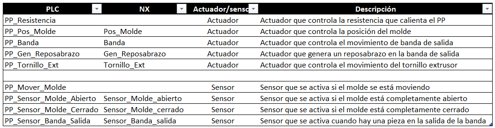
Mapeo señales - Celda Soldadura
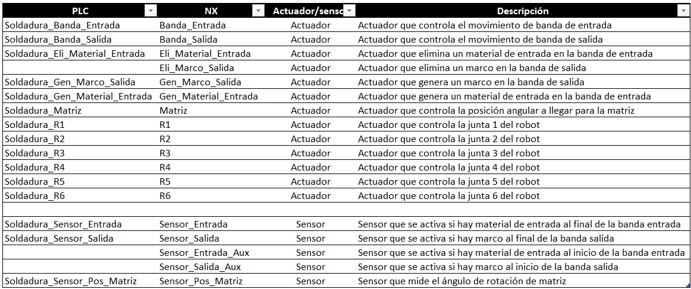
Selección de controlador industrial:
Para la selección del PLC se tuvo en cuenta 3 parámetros: número de tags manejados, capacidad de computo, y número y tipo de entradas y salidas.
Cabe destacar de que todos los programas de las celdas se realizaron en un mismo archivo de PLC para fines académicos, se realizó un análisis de cada parámetro de manera individual y global.
1. Número de tags:
Después de la elaboración de los programas en Studio 5000 se realizó la enumeración de los tags utilizados. En total da como resultado 128 tags, siendo utilizados 45 en la celda de extrucción de polipropileno, 38 en la celda de inyección de poliuretano y 48 en la celda de soldadura robotizada (nótese que hay tags utilizados en más de una celda).
2. Capacidad de procesamiento:
En ningún proceso se identificó procesos de alto rendimiento que necesiten tiempos de respuesta en ordenes de microsegundos, aparte de los internos a la comunicación y procesamiento de periféricos del PLC. Por lo que esté parámetro no va a ser discriminatorio en el proceso de selección.
3. Número de entradas y salidas:
El número de entradas y salidas de cada celda está directamente relacionado al mapeo de señales realizado anteriomente, ya que al realizar una implementación con componentes físicos, estas conexiones van a reemplazar a la realizadas en el Software NX.
Entonces se tiene que para la celda de inyección de poliuretano se necesita 3 DI, 1 AI, 3 DO y 1 AO. Para la celda de extrucción de polipropileno se necesita 7 AI y 2 DO. Y para la celda de soldadura robotizada se necesita 4 DI, 1 AI, 2 DO y 1 AO.
Dando un total de 7 DI, 9 AI, 7 DO y 2 AO.
Videos explicación:
A continuación se muestran 3 videos donde se explica en detalle los programas desarrollados para los controladores en los software NX y Studio5000.
Celda inyección de PU
Celda extrucción de PP